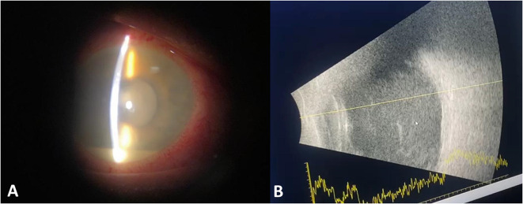
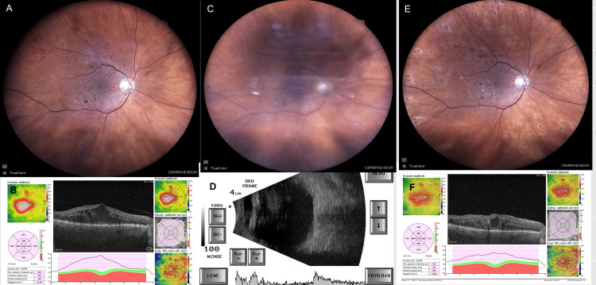
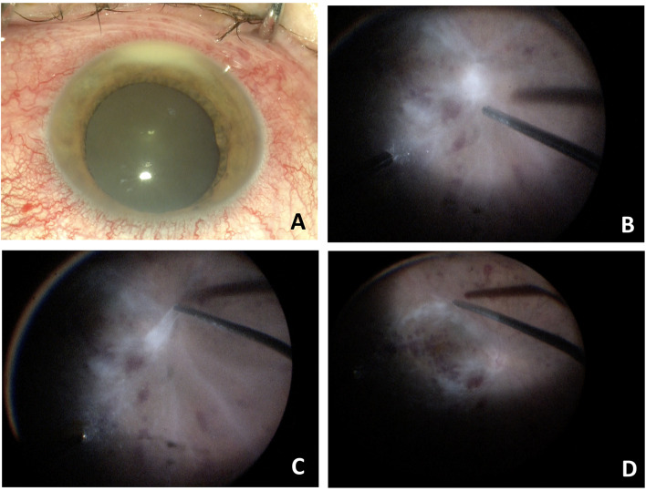

1425 — Viêm nội nhãn sau tiêm nội nhãn: mủ tiền phòng – viêm dịch kính / Post-injection endophthalmitis
Tags: pattern:viem-noi-nhan pattern:mu-tien-phong pattern:viem-dich-kinh vung:nhan-cau vung:tien-phong vung:dich-kinh protocol:sieu-am-B-scan protocol:OCT protocol:tiem-noi-nhan protocol:PPV
Mức chắc chắn (certainty): tổng hợp y văn (literature synthesis) — đọc trực tiếp toàn văn 9 bài mở qua Europe PMC/PMC (2023–2026). Hai ca nguyên văn (verbatim case) có ảnh dùng cho Blind Quiz. Phần phân định viêm vô khuẩn với nhiễm trùng trên lâm sàng–siêu âm là suy luận (inference) từ cơ chế và các loạt ca, ghi rõ tại chỗ: không có xét nghiệm hình ảnh nào phân biệt được hai thể.
1. Tổng quan bệnh học – cơ chế hình ảnh
1.1. Vì sao tiêm nội nhãn gây viêm nội nhãn — và vì sao trong 1–3 ngày
- Bệnh học (pathology): vi khuẩn xâm nhập khoang dịch kính theo 3 đường: (1) hệ vi khuẩn thường trú ở kết mạc/mi (chủ yếu Staphylococcus coagulase âm) bị kim đẩy qua nút củng mạc; (2) giọt bắn từ đường hô hấp của người tiêm (Streptococcus miệng — nhóm nguy hiểm nhất); (3) thuốc/dụng cụ nhiễm (lọ đa liều, bơm tiêm, đầu kim).
- Vì sao tiến triển nhanh: dịch kính là khoang miễn dịch đặc quyền — không có mạch máu, ít đại thực bào, nồng độ bổ thể/opsonin thấp, lại là gel giàu hyaluronan nên vi khuẩn nhân lên tự do. Chỉ cần vài chục CFU là đủ gây viêm; vì vậy thời gian ủ 1–3 ngày (trung vị loạt 21.339 mũi tiêm: 7,6 ± 3,4 ngày, khoảng 2–14 ngày; thể vô khuẩn 24–48 giờ).
- Vì sao có mủ tiền phòng (hypopyon): viêm làm vỡ hàng rào máu–thủy dịch, bạch cầu và fibrin tràn vào tiền phòng rồi lắng theo trọng lực → mức ngang vàng ở đáy tiền phòng. Đây là dấu hiệu của phản ứng viêm, không phải bằng chứng nhiễm khuẩn.
1.2. Vì sao B-scan là phương thức chốt khi không soi được đáy mắt
| Hiện tượng | Cơ chế mô – vật lý | Dấu hiệu trên hình ảnh |
|---|---|---|
| Viêm dịch kính (vitritis) | Tế bào viêm + fibrin làm tăng trở kháng âm trong dịch kính vốn đồng nhất → tăng hồi âm | B-scan: đốm/màng tăng hồi âm trong dịch kính; màng 70%, khu trú (loculated) 36% |
| Màng dịch kính sau dày, giả màng võng mạc | Fibrin đông đặc + tế bào dính vào hyaloid | Dải tăng hồi âm di động, không có tưới máu trên Doppler màu → khác bong võng mạc |
| Bong võng mạc kèm theo | Co kéo + viêm | 8% ca viêm nội nhãn có bong võng mạc — tiên lượng xấu hơn; phải loại trừ trước và sau khi tiêm kháng sinh |
| Bong/ dày hắc mạc | Thấm dịch qua màng Bruch bị viêm | Bong hắc mạc 14,8%, dày hắc mạc 16,7%, dịch dưới bao Tenon 13% |
| Mủ tiền phòng | Bạch cầu lắng | Đèn khe: mức ngang vàng; siêu âm cao tần/UBM nếu tiền phòng đục |
- Vì sao không dùng OCT làm đầu tay: khi dịch kính đục, tín hiệu quang bị tán xạ và không qua được → OCT chỉ dùng khi môi trường trong, để thấy đốm tăng phản xạ ("rainstorm"), màng trước võng mạc, phù hoàng điểm.
- Vì sao không dùng CT/MRI thường quy: tổn thương nằm trong vài mL dịch kính, dưới ngưỡng phân giải; CT/MRI chỉ để tìm ổ nhiễm ngoài mắt/hốc mắt hoặc biến chứng (viêm mô tế bào, áp-xe hốc mắt) — và MRI phải loại trừ dị vật kim loại trước.
1.3. Ngưỡng định lượng bắt buộc
- Tần suất chung: 0,02–0,2% mỗi mũi tiêm; gộp 43 bài / 350.535 mũi anti-VEGF = 0,056%; loạt 307.349 mũi tiêm 0,033% (101 ca); loạt 21.339 mũi 0,081% (13 ca, 8,1/10.000); loạt 18.365 mũi 0,038% (7 ca).
- Nguy cơ tích lũy: tiêm hằng tháng kéo dài → tới ~1% sau 2 năm (không phải 1% mỗi mũi).
- Theo thuốc: dexamethasone implant 0,125% (15/11.954) vs anti-VEGF 0,033% (106/318.618), p = 2,3 × 10⁻⁷; triamcinolone 0,532% (5/939) vs anti-VEGF 0,011% (2/17.426), OR 46,64 — phần lớn ca sau steroid là viêm vô khuẩn, không phải nhiễm.
- Bơm tiêm đóng sẵn (prefilled syringe) vs lọ đa liều: 0,017% vs 0,052%, RR 0,320 (0,198–0,518).
- Kháng sinh dự phòng tại chỗ sau tiêm: 5,3 vs 4,4/10.000, khác biệt không có ý nghĩa → không khuyến cáo.
- Khẩu trang: 0,032% vs 0,037%, p = 0,779; loạt 307.349 mũi RR 0,953 (0,616–1,473) → không chứng minh giảm nguy cơ, nhưng không loại trừ được lợi ích nhỏ ở ca do Streptococcus.
- Povidone-iodine (PVP-I) 2,5% vs 5%: 0/3.826 vs 3/3.534 (0,08%) — hiệu quả tương đương trong loạt hồi cứu.
2. Mẫu hình + chẩn đoán phân biệt theo thời điểm (gamut)
Mẫu hình chốt: mắt đau + nhìn mờ + mủ tiền phòng ± viêm dịch kính, sau tiêm nội nhãn. Gamut xếp theo thời gian khởi phát — đây là biến số mạnh nhất, mạnh hơn hình thái:
- < 24 giờ: viêm vô khuẩn/độc (sterile–toxic) do endotoxin, protein kết tụ, tá dược, giọt silicone/triamcinolone tồn lưu; đau ít, mủ tiền phòng nhẹ, cấy âm, tự giảm trong 1–2 tuần.
- 1–3 ngày: vi khuẩn gram dương — S. aureus, Streptococcus (đặc biệt S. pneumoniae, S. salivarius); thể tối cấp, mủ đặc, đau nhiều.
- 3–7 ngày: Staphylococcus coagulase âm (CoNS) — thể bán cấp, viêm dịch kính nhẹ, hay bị đánh giá thấp.
- > 1–2 tuần: nấm (Candida, Aspergillus) hoặc Cutibacterium acnes; viêm khu trú, hạt, tiến triển chậm; sau implant dexamethasone có thể muộn hơn.
- Bệnh cảnh giả (masquerade) sau tiêm: đợt bùng phát viêm màng bồ đào sẵn có, u lympho nội nhãn, u nguyên bào võng mạc (trẻ), hoại tử u — không đau, không mủ đặc, không đáp ứng kháng sinh.
Gamut theo tác nhân (loạt 25 năm, 1.423 mắt): cấy dương 63,03%; gram dương 42,94% — S. epidermidis 23,93%, S. aureus 11,03%, liên cầu 10,54%, gram âm 7,87%, hỗn hợp 6,89%, nấm 4,36%; 37% cấy âm. Loạt 18 năm khác: CoNS 42%, gram âm 9,4%, cấy dương 56%.
Vì sao Streptococcus đáng sợ: 38 mắt viêm nội nhãn do S. pneumoniae — mủ tiền phòng 89%, thị lực cuối NLP 79%, dù 39% được cắt dịch kính. Đây là lý do ca khởi phát < 48 giờ, đau nhiều, mủ đặc phải xử trí như tối cấp.
3. Bảng so sánh phân biệt (ma trận đối chiếu)
| Thực thể (entity) | Hình ảnh điển hình | Chốt vào (rule-in) | Chốt loại (rule-out) | Gợi ý xác nhận |
|---|---|---|---|---|
| Viêm nội nhãn nhiễm khuẩn (Staph/Strep) | Mủ tiền phòng + viêm dịch kính đặc; B-scan màng/dải tăng hồi âm, có thể bong võng mạc | Đau tăng + mủ tiền phòng + viêm dịch kính trong 1–7 ngày + cấy dương | Không đau, khởi phát < 24 giờ, tự giảm, cấy âm → nghĩ vô khuẩn | Chọc dịch kính 0,1–0,2 mL: Gram, cấy, PCR 16S |
| Do Streptococcus (flora miệng) | Thể tối cấp < 48 giờ, mủ đặc, đau nhiều, có khi vòng thấm giác mạc | Khởi phát < 48 giờ + mủ đặc + đau nhiều + tiền sử nói chuyện/không khẩu trang khi tiêm | Diễn tiến chậm > 1 tuần, viêm nhẹ → không phải liên cầu | Cấy máu thạch, PCR; PPV sớm |
| Viêm vô khuẩn/độc (sterile–toxic) | Viêm nhẹ–vừa, đau ít, mủ tiền phòng mỏng, B-scan đục dịch kính lan tỏa | 24–48 giờ + đau ít + cấy âm + đáp ứng corticoid | Mủ đặc + đau tăng + đục dịch kính tăng nhanh → không phải vô khuẩn | Theo dõi 24–48 giờ, cấy âm, loại trừ nhiễm |
| Viêm nội nhãn do nấm | Viêm khu trú, "fluff ball" trước võng mạc, chuỗi ngọc trai; B-scan đốm rời | > 2 tuần + tổn thương khu trú + yếu tố nguy cơ (đái tháo đường, catheter, TPN) | Khởi phát < 72 giờ, mủ lan tỏa → nghĩ vi khuẩn | Cấy nấm, β-D-glucan; không chờ cấy mới điều trị |
| Bùng phát viêm màng bồ đào / masquerade | Viêm tiền phòng ± dịch kính, không mủ đặc, có thể hai bên | Tiền sử viêm màng bồ đào/u lympho + không đau + tái diễn cùng kiểu | Mủ mới + đau + một bên sau tiêm → không phải masquerade | Đáp ứng corticoid, tế bào học dịch kính nếu kéo dài |
- Ảnh đối chiếu: ca nhiễm (mủ tiền phòng + B-scan đục dịch kính) và ca vô khuẩn (đáy mắt mờ + B-scan đục dịch kính nhưng hết sau 1 tháng) đặt cạnh nhau ở mục 6.
4. Protocol chụp + hệ phân độ/điểm chuẩn hóa
4.1. Protocol hình ảnh
- B-scan (10–15 MHz) là bắt buộc khi không soi được đáy mắt: đầu dò gián tiếp qua gel, quét kinh trục + ngang + dọc, gain cao 90 dB để thấy hyaloid rồi giảm 65 dB để phân biệt màng; Doppler màu khi cần phân biệt màng dịch kính (không có dòng) với bong võng mạc (có dòng).
- Đo và ghi: độ dày/di động màng dịch kính, có/không bong võng mạc, bong hắc mạc, dày củng mạc sau, dịch dưới bao Tenon.
- OCT chỉ khi môi trường trong: đốm tăng phản xạ dịch kính, màng trước võng mạc, phù hoàng điểm.
- UBM khi cần đánh giá tiền phòng/góc (mủ, dính mống mắt).
- CT/MRI: không thường quy; chỉ khi nghi viêm mô tế bào/áp-xe hốc mắt, hoặc tìm ổ nhiễm nội sinh. MRI: loại trừ dị vật kim loại trước.
- Vệ sinh đầu dò sau mỗi lần quét mắt viêm nội nhãn (nguy cơ lây chéo).
4.2. Phân tầng xử trí (theo EVS + CEVE)
- EVS (420 mắt sau mổ đục thể thủy tinh): cắt dịch kính (PPV) chỉ lợi rõ khi thị lực vào viện là "light perception" (LP); "hand motions" (HM) trở lên: chọc–tiêm tương đương PPV; kháng sinh toàn thân không thêm lợi ích.
- CEVE (complete and early vitrectomy): PPV sớm + tiêm kháng sinh trong mổ + lấy mẫu — được dùng cho cả ca vô khuẩn nặng vì không thể loại trừ nhiễm tại giường.
- Liều tiêm nội nhãn: vancomycin 1 mg/0,1 mL + ceftazidime 2,2 mg/0,1 mL (kinh nghiệm); moxifloxacin 500 µg/0,1 mL; amphotericin B 5 µg/0,1 mL (nấm); cefuroxime 1 mg/0,1 mL; amikacin 0,4 mg/0,1 mL.
- Theo dõi: khám lại 24 giờ; nếu xấu đi → PPV. B-scan lại trước và sau tiêm kháng sinh/PPV.
flowchart TD
A["Mắt đau + nhìn mờ sau tiêm nội nhãn"] --> B["Đèn khe: mủ tiền phòng? viêm dịch kính?"]
B --> C["B-scan: màng dịch kính, bong võng mạc, bong hắc mạc"]
C --> D{"Thị lực vào viện"}
D -->|"LP hoặc kém hơn"| E["PPV sớm (CEVE) + kháng sinh nội nhãn"]
D -->|"HM hoặc tốt hơn"| F["Chọc dịch kính 0,1-0,2 mL + vancomycin 1 mg + ceftazidime 2,2 mg"]
F --> G{"24-48 giờ"}
G -->|"Xấu đi"| E
G -->|"Cải thiện"| H["Theo dõi, điều chỉnh theo cấy"]
E --> H
4.3. Dự phòng (bằng chứng 2023–2026)
- PVP-I bắt buộc (2,5–10%, tiếp xúc ≥ 30 giây) — không có kháng sinh dự phòng thay thế.
- Không kê kháng sinh tại chỗ sau tiêm (không giảm nguy cơ, tăng đề kháng).
- Bơm tiêm đóng sẵn giảm nguy cơ (RR 0,32).
- Khẩu trang: chưa chứng minh giảm nguy cơ, nhưng hạn chế nói chuyện trong khi tiêm là biện pháp rẻ, hợp lý về cơ chế (giọt bắn Streptococcus).
5. Biến thể bình thường và cạm bẫy
- Cấy âm không loại trừ nhiễm: 37–44% ca cấy âm (đã dùng kháng sinh, thể tích mẫu ít, vi khuẩn khó mọc). Quyết định dựa lâm sàng + diễn tiến, không dựa cấy.
- B-scan không phân biệt vô khuẩn với nhiễm: cùng một hình "đục dịch kính"; thời gian khởi phát + mức đau + cấy mới là chốt.
- Bỏ sót bong võng mạc (8%): nếu tiêm kháng sinh mà không biết có bong võng mạc → tiên lượng xấu; luôn B-scan trước và sau.
- Giả mủ tiền phòng (pseudo-hypopyon): tinh thể cholesterol, tế bào u, vật liệu thể thủy tinh — không đau, không viêm dịch kính, bệnh sử khác.
- Viêm vô khuẩn sau implant dexamethasone: hay gặp hơn anti-VEGF (0,125% vs 0,033%); tháo implant là một phần xử trí; đừng mặc định nhiễm.
- "Satisfaction of search": đau mắt sau tiêm còn do trầy giác mạc, tăng nhãn áp cấp, loét giác mạc — khám đèn khe đủ trước khi kết luận.
- Tái phát có thật: đã báo ca viêm nội nhãn lần hai sau 2 năm ở cùng mắt — theo dõi dài, không coi là "miễn nhiễm".
6. Tự lượng giá — Blind Quiz
Ca 1 — Nam 66 tuổi, tiêm dexamethasone implant 0,7 mg cho phù hoàng điểm do tắc nhánh tĩnh mạch võng mạc, ngày thứ 3 đau và nhìn mờ nhiều.

- Hỏi: mô tả tiền phòng và dịch kính trên B-scan? Ba chẩn đoán phân biệt? Dấu hiệu nào chốt hướng điều trị?
Bấm để hiện đáp án (findings + chẩn đoán)
- Dấu hiệu: (A) đèn khe — sung huyết kết mạc, mủ tiền phòng, mống mắt mờ; (B) B-scan — đục dịch kính lan tỏa, dày đặc với dải tăng hồi âm phía sau (màng dịch kính/viêm), không thấy bong võng mạc rõ.
- Chẩn đoán: viêm nội nhãn nhiễm khuẩn sau tiêm implant dexamethasone — mủ + viêm dịch kính ở ngày 3 là bệnh cảnh điển hình; cần chọc dịch kính + vancomycin 1 mg + ceftazidime 2,2 mg, và PPV nếu thị lực LP hoặc xấu đi trong 24 giờ.
- Vì sao không phải chỉ "viêm vô khuẩn do implant": thể vô khuẩn thường đau ít, khởi phát 24–48 giờ, nhưng không thể loại trừ nhiễm tại giường — mủ đặc + đau tăng nghiêng về nhiễm.
- Nguồn ảnh: BMC Ophthalmology 2025; Fig. 1 — PMC12057116, CC BY-NC-ND 4.0 (nguyên bản, không chỉnh sửa).
Ca 2 — Nam 64 tuổi, đái tháo đường, tiêm bevacizumab mũi thứ 6 cho phù hoàng điểm; 24 giờ sau nhìn mờ nhanh, đau nhẹ.

- Hỏi: khác biệt nào giữa ảnh trước và sau tiêm? B-scan nói gì? Vì sao cấy âm mà vẫn phải mổ?
Bấm để hiện đáp án (findings + chẩn đoán)
- Dấu hiệu: (A–B) trước tiêm — phù hoàng điểm; (C) 24 giờ sau — đáy mắt mờ do viêm dịch kính, không thấy rõ hoàng điểm; (D) B-scan: đục dịch kính dày đặc, không bong võng mạc; (E–F) 1–2 tháng sau CEVE — đáy mắt trong, phù hoàng điểm tồn dư.
- Chẩn đoán: viêm nội nhãn vô khuẩn (sterile endophthalmitis) sau bevacizumab — khởi phát 24 giờ, đau nhẹ, cấy dịch kính và lọ thuốc âm, hồi phục thị lực nền trong 30 ngày sau CEVE.
- Vì sao vẫn mổ: không có xét nghiệm nào loại trừ nhiễm trong 24 giờ đầu; CEVE vừa lấy mẫu vừa giải áp mủ/fibrin — ở loạt 5 ca, viêm tan và thị lực về nền.
- Nguồn ảnh: Cureus 2025; Figure 1 — PMC12507134, CC BY 4.0.
Ca 3 — Bệnh nhân viêm nội nhãn sau tiêm, trong mổ cắt dịch kính.

- Hỏi: (A) mô tả tiền phòng; (B–D) tổn thương võng mạc là gì? Ý nghĩa tiên lượng?
Bấm để hiện đáp án (findings + chẩn đoán)
- Dấu hiệu: (A) sung huyết kết mạc + mủ tiền phòng; (B–D) sau bóc màng trước võng mạc: xuất huyết võng mạc rải rác, thâm nhiễm trắng, mạch máu "ma" (ghost vessels) — dấu hiệu tắc mạch do viêm.
- Chẩn đoán: viêm nội nhãn nhiễm khuẩn nặng có thiếu máu võng mạc — tiên lượng thị lực xấu; cần PPV + kháng sinh nội nhãn, theo dõi bong võng mạc (8%) và tái phát.
- Nguồn ảnh: BMC Ophthalmology 2025; Fig. 3 — PMC12057116, CC BY-NC-ND 4.0.
Bài liên quan chéo
- 495 – Viêm nội nhãn do nấm ngoại sinh sau mổ/tiêm vs TASS
- 475 – Viêm nội nhãn nội sinh do vi khuẩn
- 463 – Viêm nội nhãn nội sinh do nấm
- 411 – Siêu âm nhãn cầu
- 1420 – Áp-xe gan do Klebsiella + viêm nội nhãn nội sinh
- 492 – Sinh thiết hắc–võng mạc & lấy mẫu dịch kính
- 400 – Tổng quan Mắt & thị giác
Ảnh
1425_viem-noi-nhan-sau-tiem_AnteriorSegment-Bscan_PMC12057116.jpg— BMC Ophthalmology 2025, Fig. 1, CC BY-NC-ND 4.0.1425_viem-noi-nhan-sau-tiem_Fundus-OCT-Bscan_PMC12507134.jpg— Cureus 2025, Figure 1, CC BY 4.0.1425_viem-noi-nhan-sau-tiem_Vitrectomy_PMC12057116.jpg— BMC Ophthalmology 2025, Fig. 3, CC BY-NC-ND 4.0.- Nguồn + giấy phép từng ảnh:
images/CREDITS.md; link bài gốc:sources.md.
Không dùng để chẩn đoán độc lập khi chưa có người hướng dẫn.